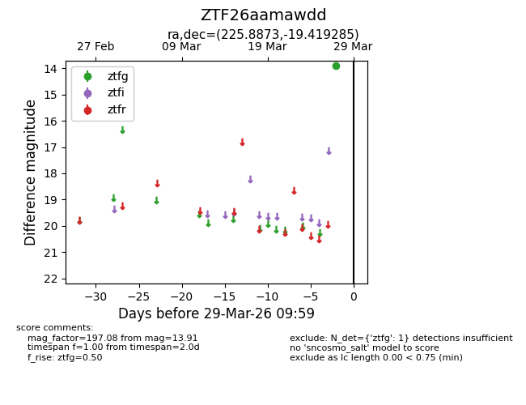
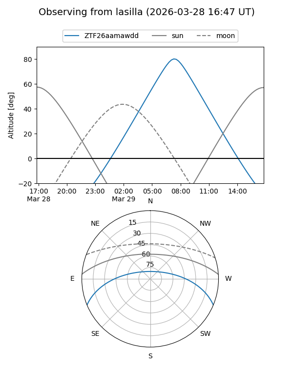
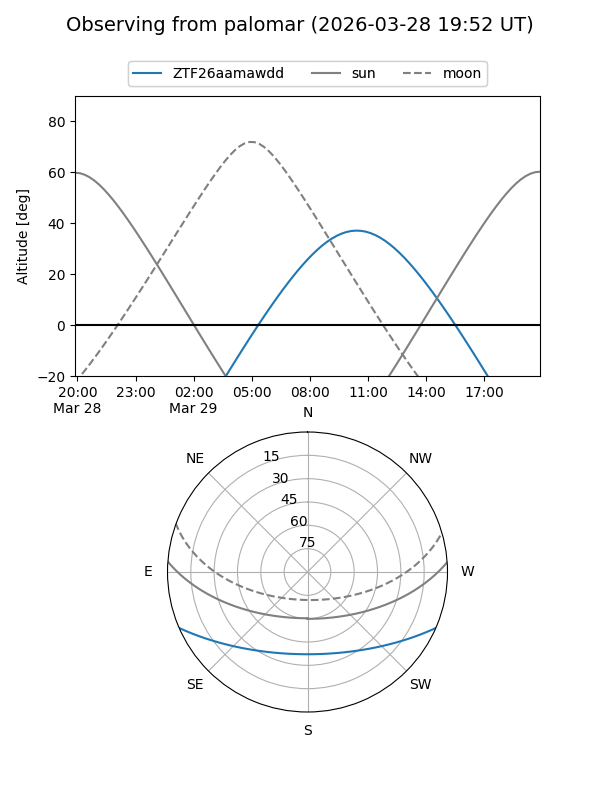

ZTF26aamawdd
Target ZTF26aamawdd at 2026-03-29 10:02
Aliases and brokers:
FINK: link
Lasair: link
ALeRCE: link
alt names
ZTF26aamawdd (ztf,fink_ztf)
Coordinates:
equatorial (ra, dec) = 225.8873,-19.41929
equatorial (HMS+DMS) = 15:03:32.95,-19:25:09.43
galactic (l, b) = (340.9948,+33.51240)
Flags:
Photometry:
last ztfg=13.91
1 ztfg detections
Lightcurve

Visibility


Additional plots